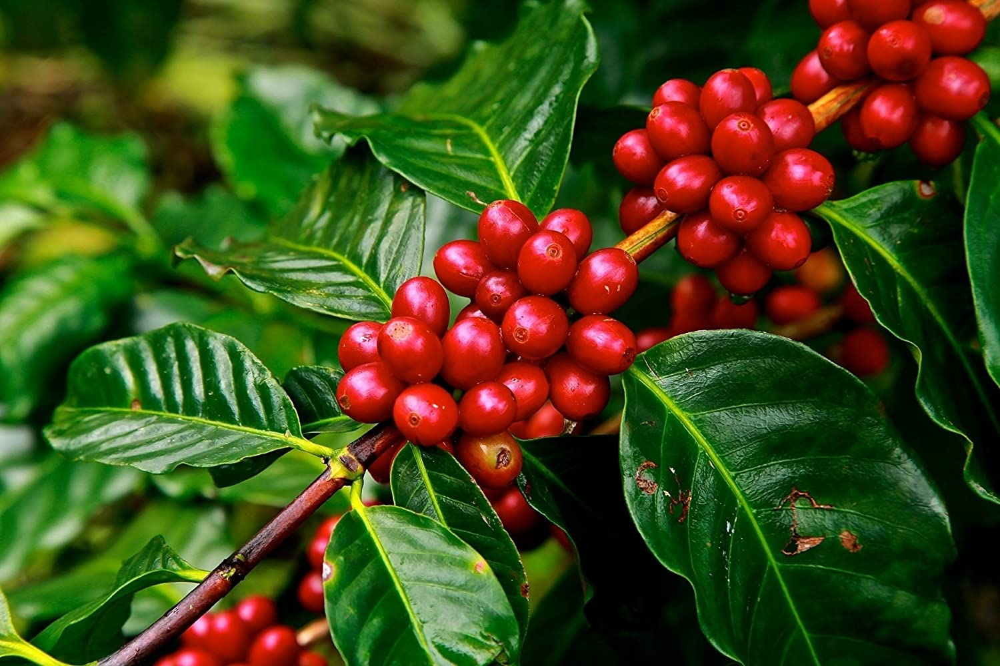

Coffee - the guide you've been looking for
May 17 '21 • Written by Yassen Shopov
📖 11 minute read
As stated by the British Coffee Association’s website, “Coffee is the most popular drink worldwide with around two billion cups consumed every day.” That’s a lot of cups.
I used to work as a barista in a local Bulgarian coffee shop during one summer, and I didn’t have too much experience with coffee beforehand. I used to drink coffee while I was in high school, but I never put too much thought into the drink, I simply drank what my mother had always brewed - a simple cup of coffee with some sugar and cream. The brand of coffee, the brewing method, the additives, the serving sizes, all that was far beyond my scope at that point.
And as I found out on the job, there was much more to coffee than it being simply a “thing to wake you up”. And as it turns out, many people don’t think about coffee too much.
In this quick guide (which I was definitely looking for as a teen) I’ll be summarising some quick facts about coffee, nothing too complicated or chemistry-related, I swear. I’ll also include my personal coffee recipes, and finally, how I use coffee as a way to increase my mental performance.
Smart Stats
Here are some general stats for coffee and caffeine. Before we start, let’s mention that there is a terminological difference between the two. Caffeine is a chemical compound, mainly found in the beverage we call coffee, but also in tea, energy drinks, chocolate. Yes, even chocolate contains trace amounts of caffeine and is not recommended if you’re trying to avoid some of the negative effects of coffee. Meanwhile, coffee is a drink, made by brewing the roasted and ground beans of the Coffea plant, right here:
So now let’s get onto the smart stats
Caffeine is a natural stimulant and it can enhance your mental and physical performance temporarily
A cup of espresso (the standard measure of a cup of coffee) contains around 50 mg of caffeine.
An adult is advised to consume no more than 400 mg of caffeine per day
‘Decaffeinated’ coffee is supposed to contain no caffeine, but it still has an average of 3% the caffeine content of a normal coffee
In general, there are two big branches of the Coffea plant type, Arabica and Robusta, Arabica being the more expensive and less bitter and acidic sort
Caffeine can increase your anxiety, nervousness, and restlessness
Black tea has on average 50% the caffeine content of an espresso shot
Some recipes
There are a ton of ways to prepare coffee, as you may have guessed. It used to be so interesting for me to see new customers come into the coffee shop and just read the menu above my head for a long while, trying to guess the difference between a Mocca and a mochaccino (just so you know, every coffee shop has a different recipe for those). Some lingo and preparation techniques that may be useful to you:
Espresso - also known as dark coffee, or pure coffee, it is made with an espresso machine. It is usually 30 ml, served in the smallest cup, and is rather dense in caffeine. On an espresso machine, I recommend you tamp the ground coffee well, until it gets a smooth surface, so the water flows through it in a consistent manner. Then turn the machine on and let the cup fill until it gets a creamy homogeneous top layer with a light color. There are subtypes of espresso, like espresso lungo (a longer shot of coffee, so it fills the cup almost to the brim), espresso doppio (double-shot), espresso ristretto (the opposite of lungo, a shorter version of espresso, very popular in Italy).
Cappuccino - an espresso shot with added foamy milk, it’s often there that you see ‘coffee art’ (drawings made with the white of the milk foam on the surface of the espresso shot). Cappuccino is very close conceptually to a latte, the difference being in the proportion coffee-milk-foam. A cappuccino tends to have a thicker foam layer on top, so it looks more like a cloud, while a latte has a thinner foam layer, which results in its silky texture and smooth feeling. If you’re making it for yourself, which you can totally do at home, and it’s what I used to do a lot, you can always experiment with the foam, and get it to be the drink you most enjoy. Basically, you make an espresso shot, then you steam the milk in a separate jug/container. When the milk gets warm enough (not too hot, remember, if it’s too hot to touch it’s too hot to drink) and it gets the proper foam, you can take it off the steamer (which is usually a small tube on the side of the espresso machine). Then you pour the milk with the foam, and there’s a special technique to implement, which you can see over here. Now go and try your hand at making a small coffee heart, this is literally the hardest thing to get right as a beginner barista.
Flat white - a very popular drink due to the increased caffeine content for its price (and often consumed by fellow tired students with empty pockets). It is basically a double shot of espresso (espresso doppio) with the added foamy milk for a cappuccino. The difference between a cappuccino/latte and a flat white is the proportion of espresso-milk.
Mocca - a cappuccino with added chocolate at the bottom, which mixes with the espresso shot and milk foam, which results in a brownish colour of the milk.
Americano - an espresso shot, diluted with hot water (what you often get on airplanes)
These are more or less the main coffee beverages you’ll see at any coffee house, the other more ‘complicated’ drinks are mainly a combination of the ones above with more sugar, cream, or syrup, and maybe with alternative milk types.
My home cappuccino recipe
After I left my job as a barista to go and study abroad, I missed the taste of a good cappuccino in the morning. At that point, I sought a way to make one at home, and it turns out you can, with just a simple espresso shot (which I used to make with a Mocca pot on the stove, but any method works) and a French press! The simple steps are:
Make an espresso shot, any way you like, and leave it at the bottom of the cup (make sure it’s large enough for a 200-300 ml drink)
Warm some milk in a separate container
Pour the warm milk into the French press, and start pressing the piston repeatedly, without too much force, for a few minutes, until the milk foam rises a few centimeters above the original milk layer
Shake the French press lightly after taking the piston out, so you get the large bubbles out of the foam (that’s how you get microfoam)
Pour the foamy milk into the espresso shot and try to make the best latte/cappuccino art you can
Coffee and productivity
We all know that coffee can be a great energy and brainpower booster. Yet, you should balance your coffee consumption with a good amount of sleep, and for this balance to exist, I recommend not drinking more than 2-3 cups of coffee per day at max.
I have been tracking my sleep data for the past 5 months, and I can definitely say that if I drink a cup of coffee later than 4 pm, I have problems sleeping, and my deep sleep percentage is far lower. I often end up waking up feeling really tired, and I need even more coffee the next day to keep up, or I’ll be quite miserable.
At the same time, I have found that coffee is a great way to escape the afternoon slump which often happens after you eat lunch and get all sleepy. If you drink a cup of coffee closely before lunch, you raise your chances of getting through thatt part of the day feeling refreshed. So use coffee with a good measure, and appreciate it for what it is - a tasty (usually) drink with many faces and quite the strong effects on us. It can boost your performance or nerf it completely if you misuse it, so proceed with caution and appreciation.
If you enjoyed this article, here are some follow-ups for you to read, including this article on how to start your creative hobby, and this one on how to gamify your life.
[18:16]
by Ali Abdaal